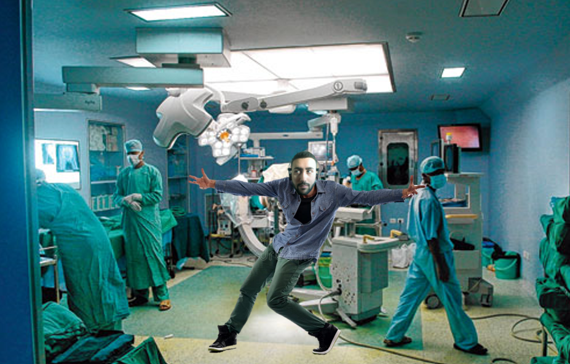

13/09/2023, 00:00 AM
Photograph taken moments into the action.
In an utterly surreal turn of events, Gaustad Hospital found itself at the epicenter of a mind-bending spectacle as the enigmatic figure known only as "Aryo" unleashed a dance performance that defied all logic and explanation.
Aryo, an entity born from the vivid realms of creativity, took the hospital by storm with an impromptu dance performance that left everyone in attendance questioning the boundaries of sanity and imagination.
Patients, accustomed to the daily struggle of mental health challenges, were treated to a mind-boggling matinee that transcended the realms of reality. Aryo's movements, graceful yet surreal, seemed to resonate with each individual on a deeply personal level.
Even the hospital's seasoned staff, initially flabbergasted by Aryo's unannounced appearance and performance, were soon entranced by the otherworldly display. Nurse Patricia Hernandez, who has seen it all, couldn't help but express her astonishment, saying, "Aryo's dance spoke to something within us that words could never reach. It was almost as if we were transported to another dimension."
Aryo's performance was a mesmerizing kaleidoscope of dance forms, seamlessly transitioning from contemporary to classical, from hip-hop to ballet, creating a bewildering blend that defied categorization. Spectators were left in a state of awe as they tried to comprehend the depth of Aryo's artistic expression.
However, as the performance continued to spiral into the absurd, the unthinkable happened. Gaustad Hospital's security personnel descended upon the scene, prompted by concerns over Aryo's unauthorized presence within the facility. Despite attempts to communicate with the mysterious performer, security ultimately made the fateful decision to detain Aryo.
The hospital's administration, Gaustad Hospital being the epicenter of these unfoldings, remains tight-lipped about the breach of security and the ensuing performance. Authorities responsible for maintaining order within the hospital plan to interrogate Aryo, seeking to uncover the motivations and intentions behind this bizarre act.
Aryo's dance, an unforgettable phantasmagoria that transcended the boundaries of reality, will surely be etched into the collective memory of Gaustad Hospital. Patients and staff alike will forever carry this surreal experience with them, though it culminated in Aryo's arrest.
For those captivated by the transformative power of dance, delve into the world of dance therapy and its profound effects on mental health through this link.